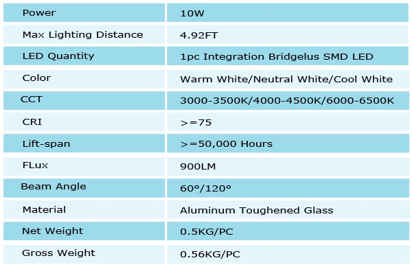
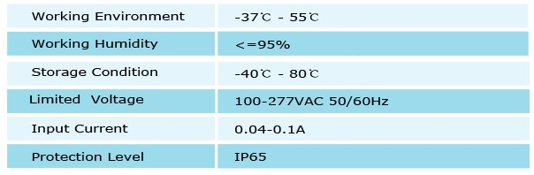

	   <div class="product-details margit-top110">
	        <div class="container">
			      <div>
				      
				  </div>
				  <div class="row bottom-line">
				       <div class="col-xs-12 col-sm-7 col-md-7">
					       <p>
							   With it's integrated applications of LED light sources and it's unique circuit control design, G2G's Flood Light models are superior of more than 80% of energy consumption. Given it's ultra- bright, high color rendering index, G2G's Flood Light technologies are the latest style in efficient outdoor lighting, all while demonstrating a long lasting product life of over 50,000 hours.
							   <br>
							   Ideal for outdoor decorative building and monument lighting, industrial lighting, advertisement illumination, road lighting and street lamp distribution, our LED Flood Lights satisfy a variety of applications.
						   </p>

					   </div>

				  </div>				 
				  				  
				  <h3 class="specification">Features</h3>
				  <div>
				      
				  </div>
				  <h3 class="specification">Technical Specifications</h3>
				  <div>
				      
				  </div>
				  
				  
			</div>
	   </div>
	   
	 